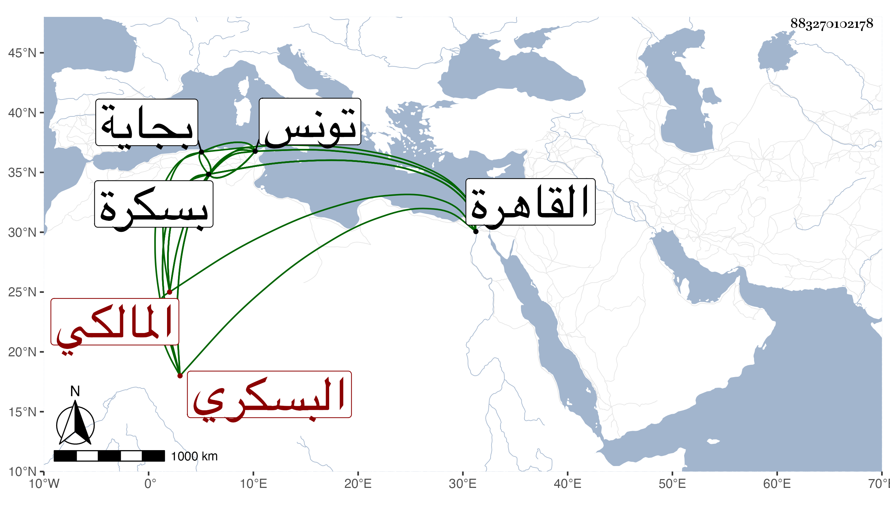

0902Sakhawi.DawLamic.ITO20230111-ara1.EIS1600.883270102178
Biography ID: 883270102178
410
أحمد بن محمد بن علي بن أحمد اللياني ثم البسكري المالكي ويعرف بابن فاكهة . قدم القاهرة في سنة تسع وثمانين فحج ثم اجتمع بي فسمع مني المسلسل وغيره وقرأ علي في الصحيحين والموطأ وقال لي أنه ولد تقريبا سنة ست وأربعين وثمانمائة بليانة بكسر اللام وتحتانية وبعد الألف نون قرية من بسكرة وتحول منها لبسكرة وهو طفل فقرأ بها القرآن والرسالة وإلى النكاح من ابن الحاجب والجرومية والألفية ثم ارتحل لتونس ومسافة ما بينهما نحو اثني عشر يوما فلازم إبراهيم الأخضري في الفقه وأصله والتفسير والحديث وغيرها وأقام بها خمسة أعوام ولاء وارتحل إليها مرة بعد أخرى ومن شيوخه أيضا في الفقه وأصله والعربية وغيرها محمد الكومي وكذا أخذ عن محمد الواصلي ومحمد الرضاع وأحمد النخلي والسلاوي وآخرين من شيوخ تونس بل وأخذ في بجاية وبينها وبين بسكرة خمسة أيام عن سليمان بن يوسف الحسناوي وعيسى بن أحمد الحنديسي وقرأ للسبع جزءا من أول القرآن على محمد التونسي العربي المؤدب .
